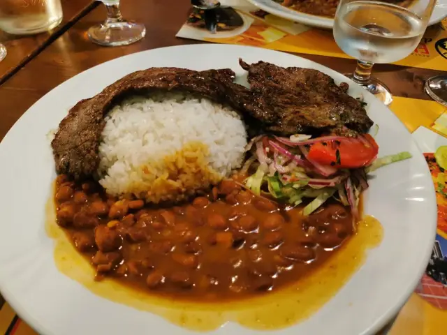
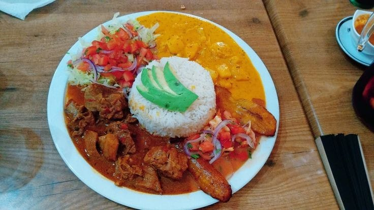

La gastronomía ecuatoriana es un reflejo de la diversidad geográfica y cultural del país. Desde la costa hasta la sierra, pasando por la Amazonía, los platos tradicionales se destacan por sus sabores únicos, ingredientes autóctonos y técnicas culinarias transmitidas de generación en generación. Uno de estos platos representativos es "la bandera", una muestra simbólica de la riqueza culinaria de Ecuador.
Origen y Significado
La bandera ecuatoriana es más que un plato de comida; representa una síntesis de las influencias gastronómicas del país, especialmente de la región costeña. Se dice que este plato debe su nombre a su disposición en el plato, ya que los alimentos se organizan en franjas horizontales, evocando los colores de la bandera de Ecuador: amarillo, azul y rojo.
Este plato tradicionalmente incluye arroz (que simboliza la franja amarilla), menestra (habitualmente de lentejas o frijoles, representando la franja azul), y carne (generalmente res, pollo o pescado, simbolizando la franja roja). Aunque puede variar dependiendo de la región y del gusto personal, la esencia de la bandera permanece inmutable: la combinación de carbohidratos, proteínas y vegetales que reflejan el equilibrio en la alimentación ecuatoriana.
Componentes Principales
- Arroz: Este es el ingrediente básico en la mayoría de los platos ecuatorianos, especialmente en la costa. Es versátil y sirve como acompañamiento esencial. En la bandera, el arroz cocido simple o con algún toque de ajo es fundamental.
- Menestra: Una preparación a base de lentejas o fréjol, que se cuece lentamente con especias como comino, ajo y cebolla. La menestra es un elemento distintivo del plato, no solo por su sabor, sino por su alto contenido en fibra y proteínas vegetales.
- Carne: En la mayoría de las versiones, la carne que acompaña este plato puede ser res frita o a la plancha, aunque también es común encontrar pollo o pescado, dependiendo de la preferencia. Esta elección aporta la proteína animal al plato, balanceando los macronutrientes.
Importancia Cultural
La bandera es una expresión clara de la cultura costeña, aunque también ha sido adoptada en otras regiones del país debido a su popularidad y simplicidad. El plato ha sido adaptado en diversas cocinas ecuatorianas y se ha convertido en una comida habitual en los hogares y restaurantes populares.
Este plato no solo es una opción gastronómica; es una representación del mestizaje que define la identidad ecuatoriana. Los ingredientes, como el arroz (introducido por los colonizadores españoles), se mezclan con productos nativos como el fréjol, lo que hace de la bandera un plato que combina elementos indígenas y europeos.
Valor Nutricional
Desde el punto de vista nutricional, la bandera ecuatoriana es un plato balanceado. El arroz aporta carbohidratos complejos, esenciales para la energía, mientras que la menestra añade proteínas vegetales y fibra dietética, lo cual es importante para la digestión. La carne, a su vez, es una fuente importante de proteínas, hierro y otros minerales esenciales. El equilibrio de estos elementos convierte a la bandera en una comida completa y nutritiva. 
Conclusión:
La bandera ecuatoriana no es solo un plato tradicional, sino una expresión de la riqueza cultural y gastronómica del Ecuador. Al probarla, no solo se degustan los sabores típicos de la costa, sino que se experimenta la historia y el mestizaje de una nación. La popularidad de este plato en el país y su inclusión en el repertorio de la cocina diaria demuestra cómo la comida puede convertirse en un símbolo de identidad, conexión y orgullo nacional.
Referencias Bibliográficas
Chiriboga, D. (2012). Cocina ecuatoriana: Historia, identidad y cultura. Quito: Editorial Abya Yala.
Ramos, G. (2015). Sabores del Ecuador: Tradiciones y recetas. Guayaquil: Editorial Orellana.
Silva, M. (2018). "Gastronomía ecuatoriana: Tradición y modernidad". Revista Cultura y Sociedad, 34(2), 45-60.
Vera, J. (2020). Platos típicos del Ecuador: Un viaje gastronómico. Cuenca: Ediciones Andinas.
Este ensayo busca proporcionar una visión clara y concisa sobre la importancia de la bandera en la cocina ecuatoriana, su simbolismo y su relevancia en la cultura y alimentación del país.